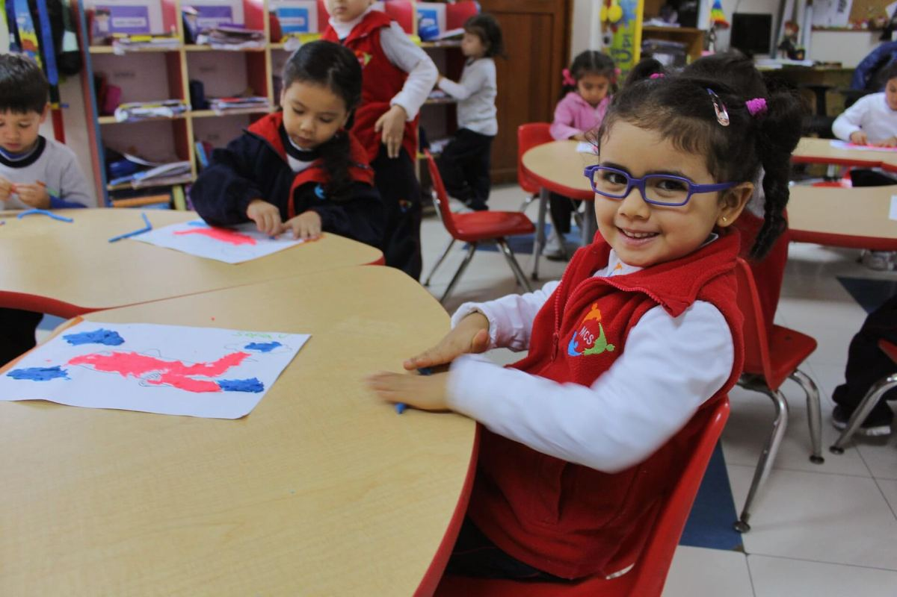
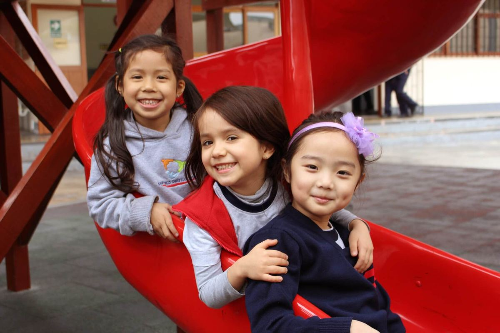
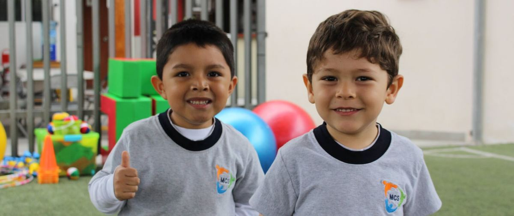
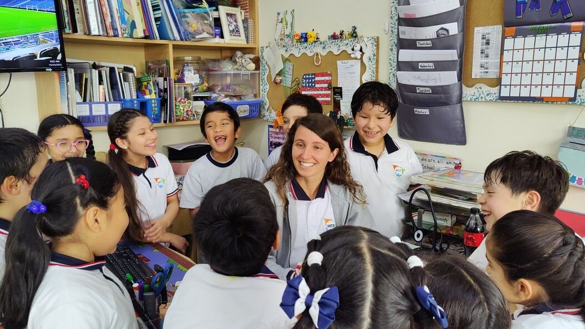
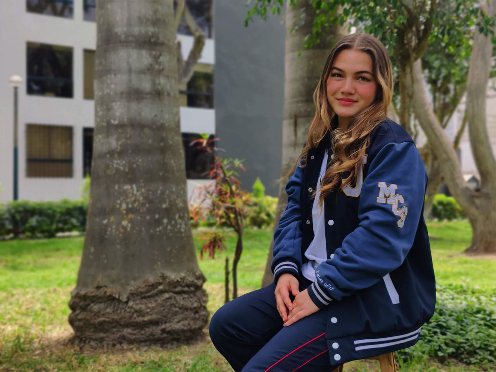
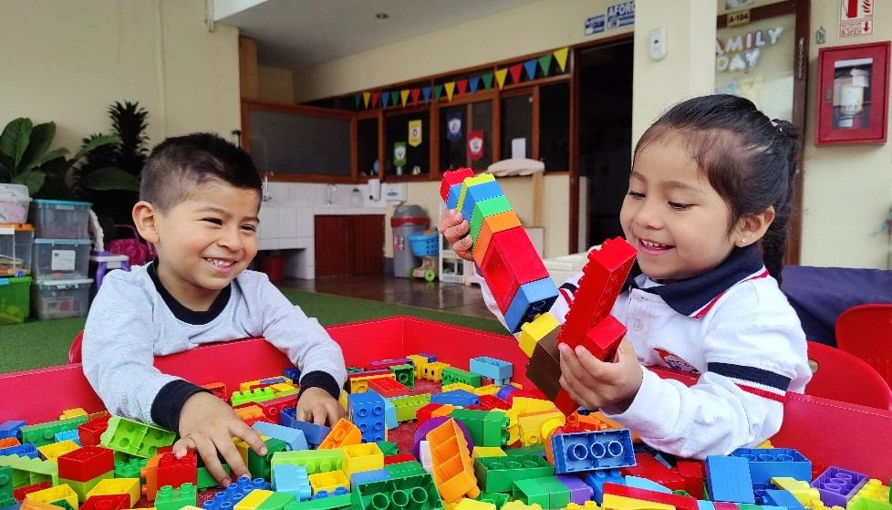
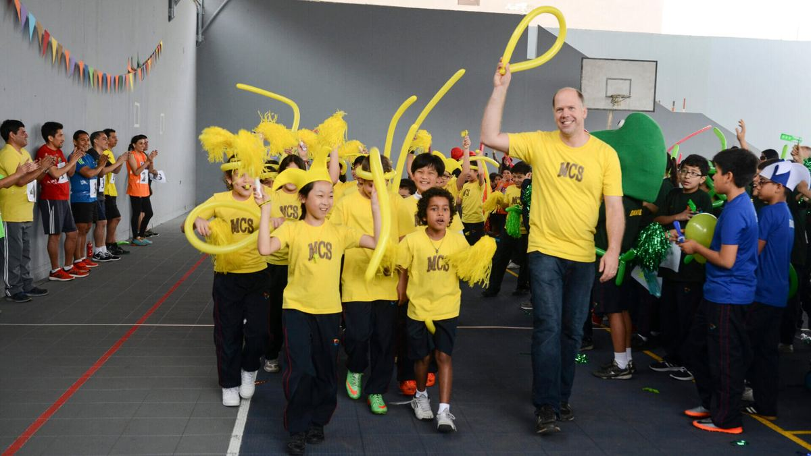
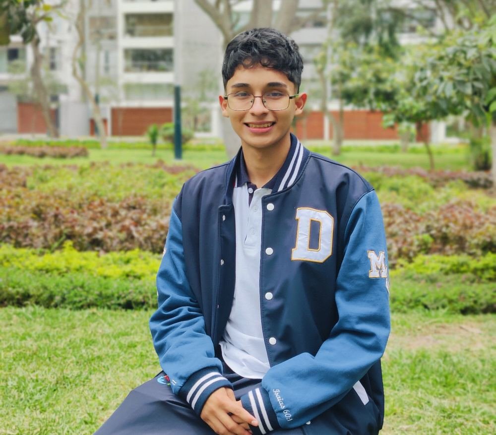

Inicial, primaria y secundaria
Un mismo camino desde los 3 años hasta quinto de secundaria, en inglés y en español.
Early Years · Elementary · High School

Inicial · Early Years · 3 a 5 años
¡Aprendemos jugando!
Es una etapa muy especial para el niño y para sus padres. Aquí encuentra espacios para socializar, compartir con sus compañeros, comprender sus emociones, hacer nuevos amigos y aprender a través del juego.
Desde el juego lo formamos en comunicación, ciencias, matemáticas, artes, responsabilidad ambiental y ciudadana, y psicomotricidad, en sintonía con los padres para lograr juntos los objetivos.
Desde los 3 años empieza el programa de inmersión en inglés: aprende el idioma de forma natural con Zoo-phonics, un método que asocia cada letra a un animal y a un movimiento. En kindergarten empieza a leer y se introduce el método Singapur en matemáticas.
- Phonics y lectura en inglés
- Christian Studies: oración y pasajes bíblicos
- Matemáticas aplicadas a la vida diaria
- Pensamiento crítico
- Psicomotricidad fina y gruesa

Primaria · Elementary · 1.° a 6.° grado
Inglés de inmersión hasta sexto grado
El programa de inmersión en inglés continúa en primaria hasta sexto grado, con maestras nativas y un ambiente preparado para que cada alumno desarrolle el idioma con distintos métodos y herramientas.
La enseñanza personalizada nos permite conocer y atender las necesidades de cada estudiante en lo cognitivo, lo emocional y lo espiritual, respetando su forma y su ritmo de aprendizaje.
Además, deportes dentro del horario regular, laboratorio de cómputo y laboratorio móvil en las aulas, y clases de artes plásticas, música y teatro.

Secundaria · High School · 1.° a 5.° de secundaria
Bilingüe, exigente y con propósito
En secundaria el programa es bilingüe y formamos estudiantes con altos estándares académicos, que aprovechan sus conocimientos, sus dones y sus talentos.
Los preparamos para que vivan con propósito, sirvan con corazón y se conviertan en líderes que impacten positivamente en la sociedad.
Aprenden a amar y ayudar al prójimo: participan en visitas misioneras y planean, organizan y desarrollan programas para suplir las necesidades de una comunidad.
Un día en MCS



Visítenos o escríbanos
Teléfono
(01) 344-2888Horario
Lunes a viernes de 8:00 a. m. a 4:30 p. m.
Directorio · central (01) 344-2888
-
RecepciónAnexo 110
recepcion@mcslima.edu.pe -
AdmisiónAnexo 112
admision@mcslima.edu.pe -
FinanzasAnexo 111
finanzas@mcslima.edu.pe -
Secretaría académicaAnexo 123
secretariacademica@mcslima.edu.pe -
PsicologíaAnexo 121
psicologia@mcslima.edu.pe -
LogísticaAnexo 122
logistica@mcslima.edu.pe